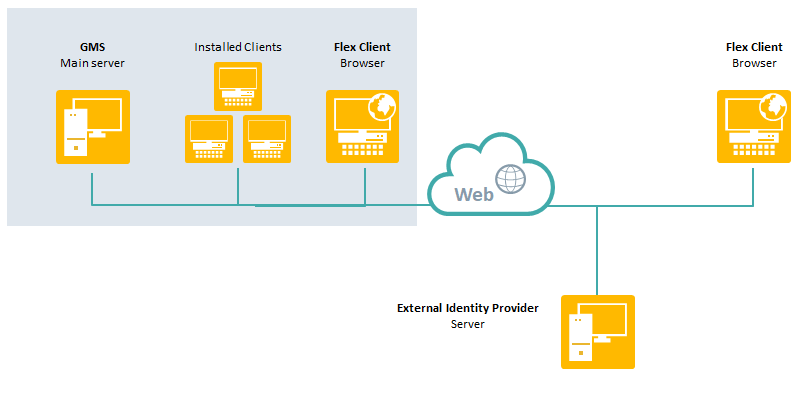
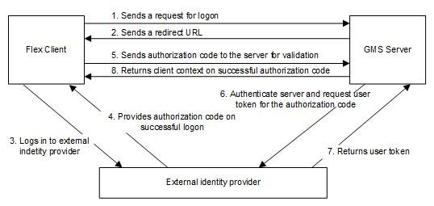
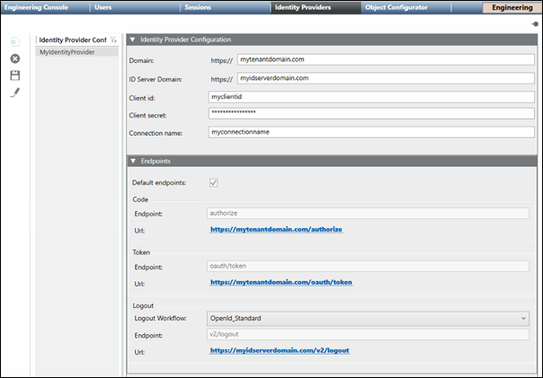
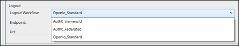

Identity Providers
This section provides background information about Local OpenID accounts and Identity Providers for accessing the Flex Client. For procedures or workflows, see the step-by-step section.
The OpenID user login is a decentralized authentication system for the Desigo CC Flex Client. It ensures a secure authentication on the Desigo CC Flex Client on projects that do not have their own domain infrastructure. If you already use OpenID as the authentication system, you can also use the existing Identity Providers account in Desigo CC.
Supported Identity Providers
The authentication is managed by one of the supported identity providers. The following platforms can be used in Desigo CC for identity provider authentication:
- Auth0: https://auth0.com/
- Okta: https://www.okta.com/
- Keycloak
The following social identity providers are supported by the above platforms:
- Amazon
- Microsoft
Obtaining an OpenID
The following diagram illustrates the process for obtaining an OpenID.
- You must request credentials from the OpenID provider to login with an OpenID user login. The credentials must be entered in Desigo CC in the Identity Provider tab.
- Register the project with the OpenID provider and publish the redirect URL from the Desigo CC Web Service Interface.
You receive a domain address from the identity provider, a client ID as well as a client secret key ID. This information must be entered in the Identity Provider Configuration tab.
Each Desigo CC user in the project must register using his or her e-mail address and a password with the identity provider with an account

Flex Client OpenID Topology and Authentication
OpenID accounts are only for logging into the Flex client.

If an OpenID is entered for a Desigo CC user account, authentication of a Desigo CC Flex Client login is an eight-step process. The ID token authentication process includes the corresponding ID data and the information is transmitted in encrypted form via the https protocol. Only authorization code flow is supported for login. All other authorization procedures are not supported in Desigo CC.

Identity Providers Workspace

Identity Providers Configurations List
Displays the names of the Identity Provider configurations and allows you to  Filter on the names in the list. Also, allows you to configure new, edit, and delete Identity Provider configurations.
Filter on the names in the list. Also, allows you to configure new, edit, and delete Identity Provider configurations.
Identity Provider Toolbar
|
Identity Provider Toolbar | ||
Icon | Name | Description |
| New | Displays a new Identity Provider Configuration tab. |
| Delete | Deletes the selected Identity Provider configuration. |
| Save | Saves the selected Identity Provider configuration. |
| Edit | Edit the selected Identity Provider configuration name. NOTE: The configuration itself can be edited at any time without clicking the Edit button. |


Configuration Sections
|
Identity Provide Configuration | |
Field | Description |
Domain | The domain address for the identity provider. |
ID Server Domain | The ID Server domain for the identity provider. |
Client id | A unique id supplied by the identity provider or must be requested from the provider. Each user receives its own assigned ID. |
Client secret | A unique ID supplied by the identity provider together with the client ID. |
Connection name | The connection name of the Authorization server added to the IAM platform. The Connection name helps in directly navigating to the authentication page of the server. If the field is left blank, a standard Auth0 page is displayed where you will have to select connection from the list of connections available on the IAM platform. |
Endpoints | |
Field | Description |
Default endpoints | If checked, the default values for the endpoints are used and populated automatically. This is the default setting. If the checkbox is not checked, the endpoint values must be entered manually. |
Code |
|
Token |
|
Logout | 
|
OpenID Workflow Troubleshooting
Problem | Cause | Solution |
On logging to Desigo CC Flex Client user account via OpenID Authorization code workflow fails. | Cause 1: If Desigo CC server fails to validate the validity of Identity Provider domain certificate before exchanging the authorization code required for authenticating Identity Provider server and in generating user token. | Solution 1: To bypass the additional domain validation, add a Boolean flag labeled IsDomainValidationRequired to the project configuration file named as config located at [Installed_Drive]\GMSProjects\[Project_name]\config\ under the Web_Service_Interface configuration section and set its value to False. If this value is set to True or if this Boolean flag is not present, the Identity Provider server domain validation is executed by default. |
Cause 2: If the Desigo CC server is not directly connected to the internet and instead accesses it through a proxy to exchange the authorization code with Flex Client. | Solution 2: Specify the proxy address in the WCCOAWsi.exe.config file. This file is located at: |